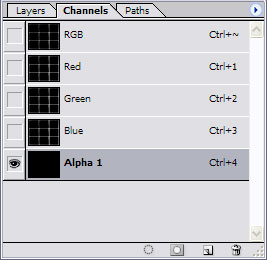
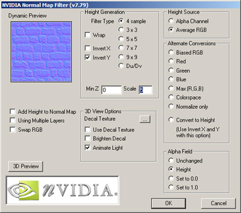

Generate maps for parallaxmapping
Requirements
The Nvidia Photoshop Normal Map Filter plug-in from Nvidia. This plug-in can be downloaded from
developer.nvidia.com
- First, you need a greyscale image or a bump map as the base for the Parallax Map. Please note that most of the time, you will have to convert this greyscale image to a RGB image. You can do this with select Image > Mode > RGB Color (menu bar).
- Go to the "Window" tab and select "Show Channels". In the channel window, click the 'Create New Channel' icon on the bottom right, just left of the Trash Icon. A new channel "Alpha 1" will appear.
- Click one of the Color channels, press CTRL-A then CTRL-C to copy the channel informations to the clipboard for later use.
- In the channel window select the RGB channel with shift and the left mouse button. All channel tabs should now be marked or accordingly selected.
- Go now to the "Filter" menu and select "nvTools/NormalMapFilter...". In the Height Generation section, select InvertY.
To create a Parallax Map you also have to select Height in the Alpha Field Section.
With the "Scale" setting you can alter the intensity (depth) of the normal map. The "Filter Type" setting,
defines how precise the normal map has to be. "4 sample" means precise, whereas 9x9 means rough. Click "OK" to proceed.
- You should now have a normal map, combined with a bump map in the Alpha Channel.
- Now you have to insert the previous saved channel information to the "Alpha 1" channel. Select the alpha channel with your left mouse button and then press CTRL-V to paste the Heightmap image into the channel.
- To increase the quality of your Parallax Map you can try also to apply a low gaussian filter to the alpha channel. Further you can reduce the contrast to get better results.
- Save the Image as PNG or TGA as 32 bit.

